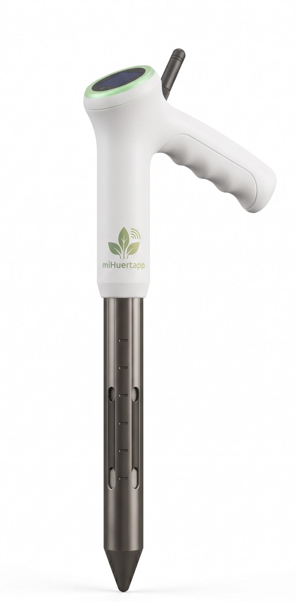
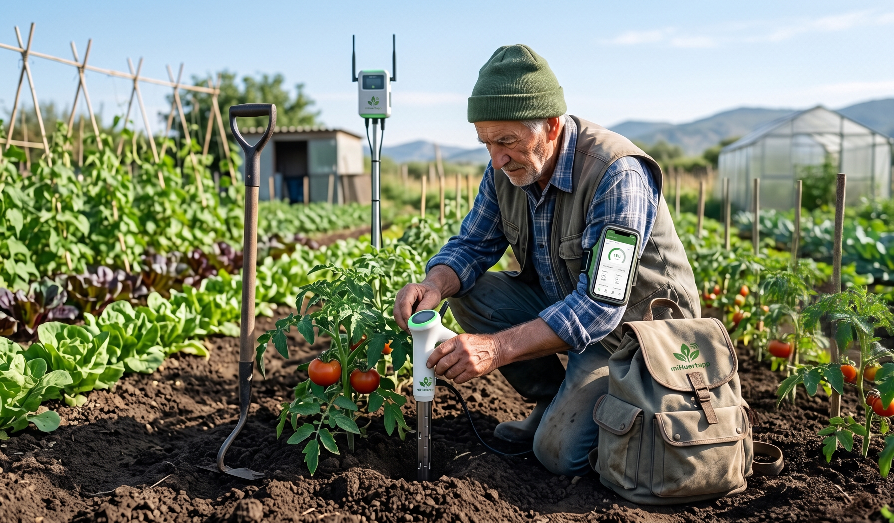
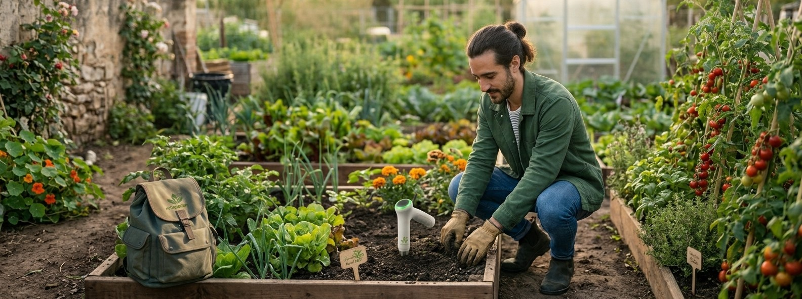
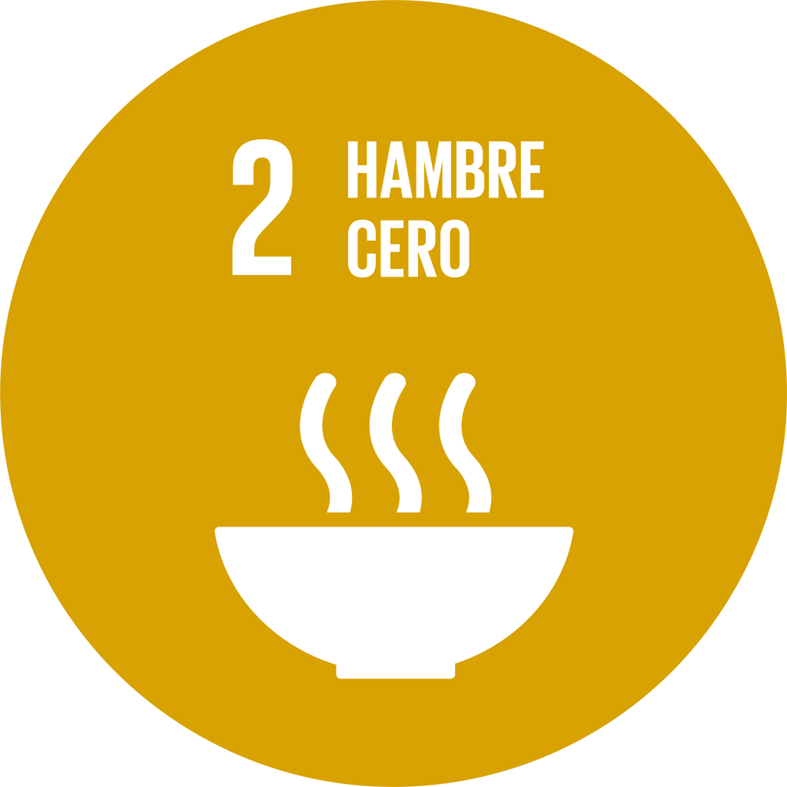
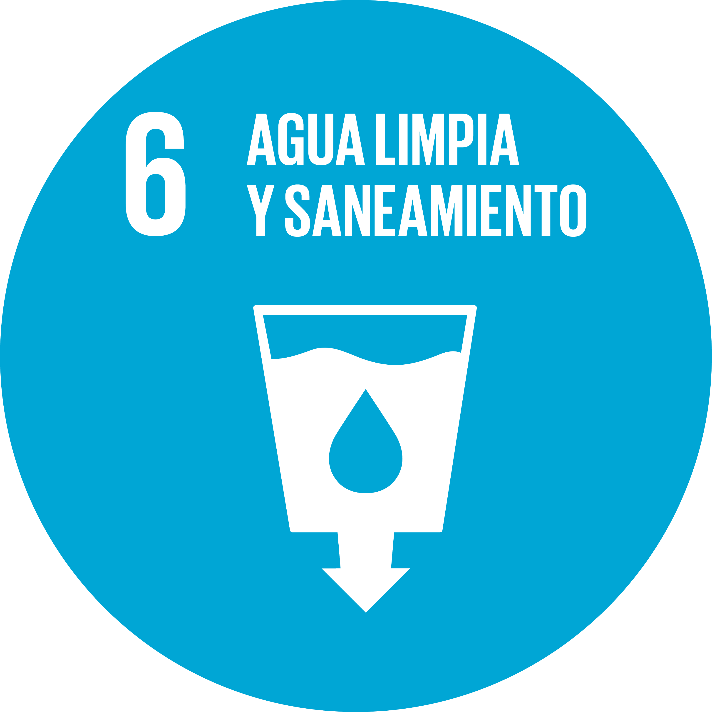
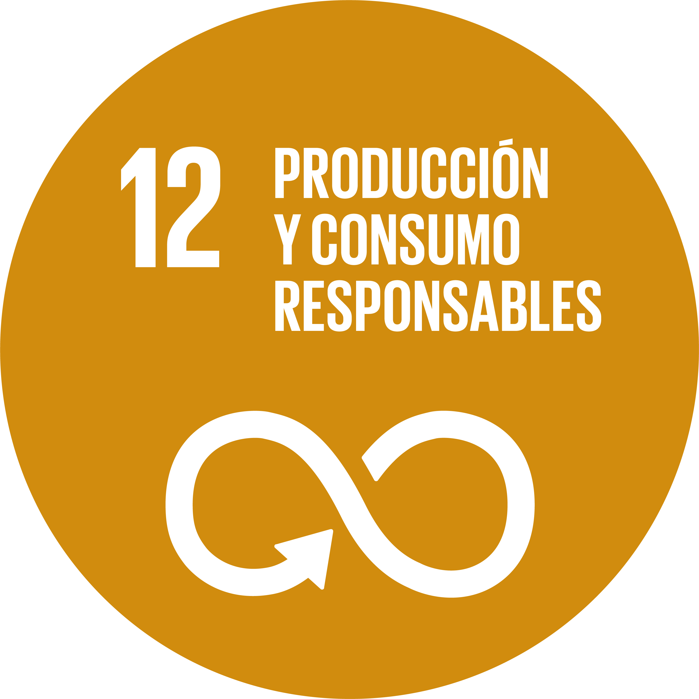
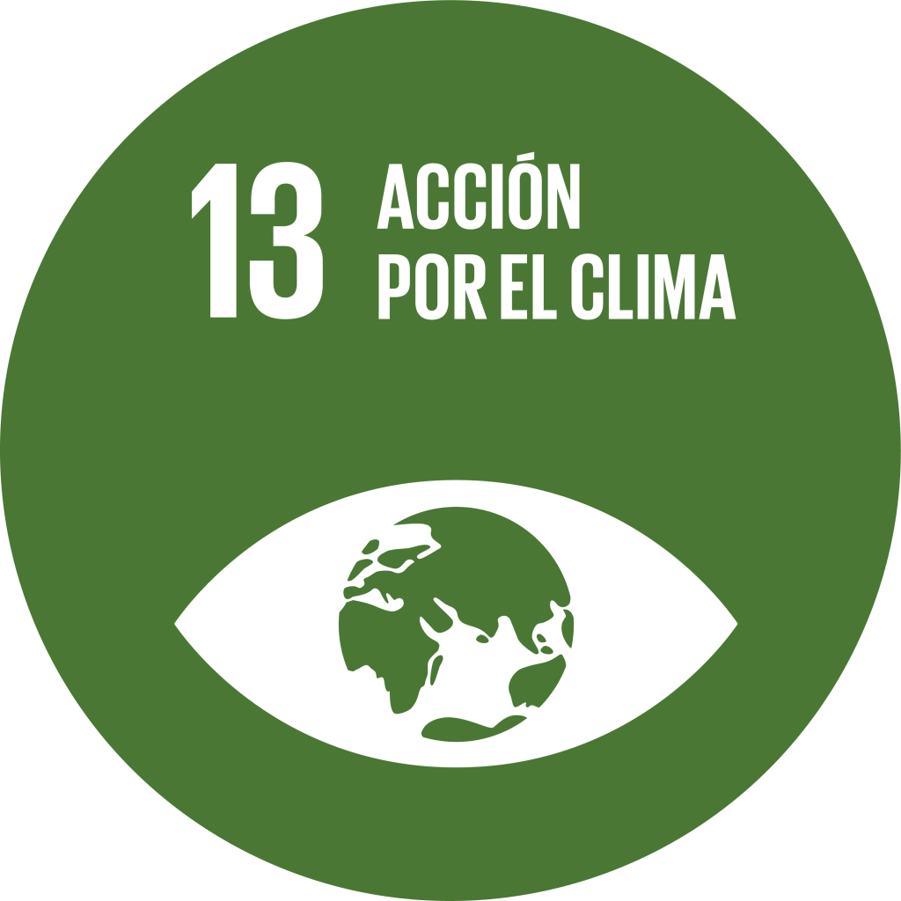
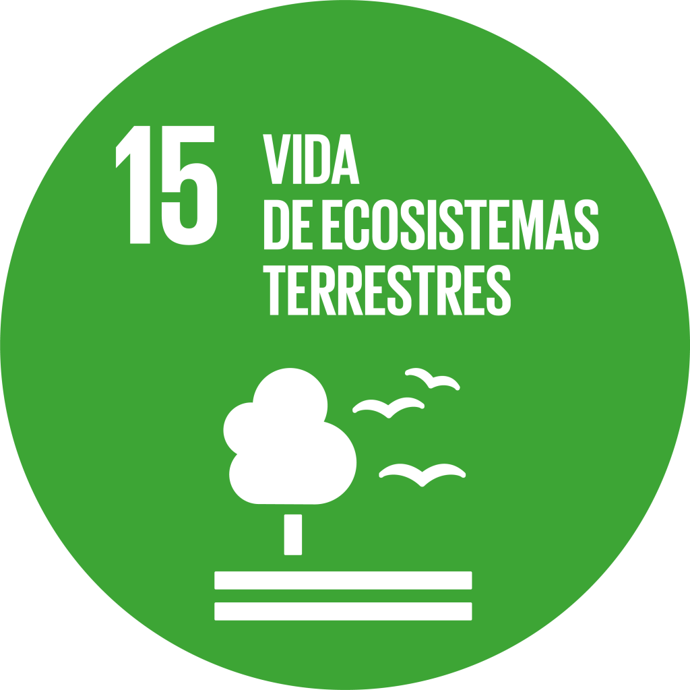

¿Qué es miHuertapp?
Cuidar un huerto exige estar pendiente de él cada día. Hay que vigilar la humedad de la tierra, la temperatura y el estado de las plantas, decidir cuándo regar y detectar a tiempo cualquier plaga. Todo eso requiere tiempo, desplazamientos y unos conocimientos que no todo el mundo posee.
De ahí nace miHuertapp. Unas estacas con sensores, clavadas en la tierra, vigilan tu huerto por ti a todas horas. Y desde el móvil, una aplicación traduce todos esos datos en avisos y consejos sencillos, para que sepas en todo momento qué necesitan tus cultivos sin ser un experto en el campo.
1
Vistazo al móvil para saber que todo va bien
0
Conocimientos técnicos necesarios
∞
Monitorización remota, sin desplazamientos
2500
Clientes ya confían en nosotros
¿Cómo funciona miHuertapp?

1. Mide
→

2. Envía
→
3. Analiza
→
4. Avisa
Un simple vistazo basta
Pulsa cada luz para ver qué significa
Todo en orden
Requiere atención
Alerta crítica
¿Para quién es miHuertapp?
Pulsa un perfil para conocerlo

Profesionales del campo
Es para ti si gestionas varias fincas y no puedes estar en todas a la vez.
Antes recorría mis parcelas cada mañana. Ahora miro el móvil y sé a dónde tengo que ir y cuándo he de ir. Excelente inversión.

Aficionados
Es para ti si tienes un pequeño huerto y quieres que salga adelante aunque estés empezando.
Nunca había tenido un huerto y tenía miedo de cuidar uno. Con miHuertapp he aprendido sobre la marcha y ese miedo ya ha desaparecido. ¡Qué maravilla!
Nuestro compromiso con los ODS
miHuertapp constribuye a los Objetivos de Desarrollo Sostenible de la Agenda 20230

Menos pérdidas en las cosechas

Riego justo, sin derrochar agua

Menos químicos en el campo

Menos desplazamientos, menos emisiones

Tierra vigilada y más sana